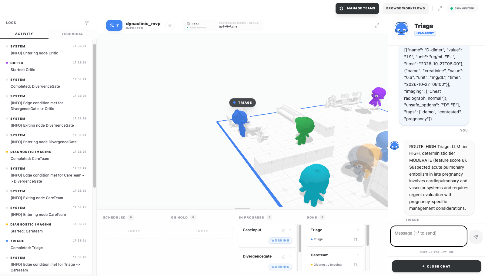

DynamiClinic
Switching a multi-agent system's architecture per clinical case: what the prototype does, what it shows, and what it does not yet show.
Reviewed by A/Prof. Arthur Tang and Dr. Linh Tran, School of Science, Engineering and Technology
branch threejs-devall
Clinical multi-agent systems commit to one architecture before they see the case
MedAgents Findings of ACL 2024
Multi-round expert consensus on every question: the same heavy pipeline for an easy case and a hard one.
MDAgents NeurIPS 2024
Picks solo or team once, by complexity. Best on 7 of 10 benchmarks (up to +4.2%), but the structure cannot change mid-case.
Dialectic-Med Findings of ACL 2026
Proponent, opponent and mediator falsify a hypothesis; fewer hallucinations on medical image QA.
The proposal: make the topology a variable
Routine, low-acuity cases. A hub queries specialists, who do not talk to each other.
Multi-system cases. Specialists share reasoning and build one differential.
Uncertain or conflicting evidence. A critic attacks the consensus; a mediator resolves.
A Meta-Controller scores complexity and uncertainty and switches mode, so heavy compute is spent only where the case needs it.
A working pipeline on the DevAll multi-agent platform
custom node types in one YAML workflow
arms evaluated: single, dynamic, static (always full team + Critic)
office view: each agent is a character that walks to work
automated tests, no model calls needed
The care team disagrees, and the Critic is called in

Real run, OpenAI gpt-6-luna. Log: DivergenceGate, then Critic started. Chat: ROUTE: HIGH.
Mock patient: 30 weeks pregnant, suspected clot
Triage calls the case HIGH; all three specialists are consulted.
Imaging picks B (0.75), Pharmacology picks C (0.82), Pathology abstains.
Divergence 0.59 > 0.25: adversarial mode, the Clinical Critic reviews every claim.
The Synthesizer resolves B vs C and answers C, correct; safety gates pass.
The switch fired in 4 of 9 real runs of this case: all 3 runs triaged HIGH, and 1 of 6 triaged MODERATE. Reported, not forced.
The three modes now run. Not more accurate than one agent, yet.
MedQA-USMLE, 50 random test questions
Accuracy with 95% interval. gpt-6-luna, one run per arm; "dynamic now" is after f15.
| single | dynamic now | static | |
|---|---|---|---|
| MedQA calls / question | 1.00 | 6.94 | 6.00 |
| MedQA latency, mean | 5.3 s | 32.0 s | 29.9 s |
| MedQA adversarial mode | n/a | 34% | always |
| Synthetic 24 accuracy | 100% | 95.8% | 100% |
| Synthetic calls / case | 1.00 | 7.12 | 6.08 |
| Unsafe answers (synthetic) | 0 | 0 | 0 |
The pipeline and all three modes now match; the thresholds are not validated
matches
- Uncertainty score (entropy of a generalist sweep) and one rule over C and U
- Hierarchical hub, mesh exchange, Proponent / Opponent / Mediator
- Any scenario, not only quiz questions
- Runs on DevAll, as the proposal's Figure 1 shows
partial
- tau_u calibrated in-sample (p75), not against outcomes
- Conflict Detector threshold not validated
- One round per mode, one agent per role
- H1 / H2 match exact wording, not paraphrases
missing
- Counterfactual grounding loss
- Proponent and Opponent teams, multi-round debate
- Process models and institutional protocols (L4)
| Proposal's own example (Figures 2, 3) | expects | route, 2 runs | mode now (U) | Mediator verdict |
|---|---|---|---|---|
| Sore throat and mild fever for 2 days | LOW | LOW, LOW | adversarial (0.71, 0.65) | H1 acute pharyngitis |
| 68-year-old diabetic, chest pain, renal insufficiency, warfarin | HIGH | HIGH, HIGH | adversarial (0.94, 0.92) | H1 suspected ACS |
| 55-year-old, chest pain, normal ECG, high D-dimer, long flight | CONFLICT | HIGH, HIGH | adversarial (0.91, 0.94) | pulmonary embolism (H1 = H2 reworded) |
To test the thesis, the benchmark must make the agents disagree
A harder benchmark
MedXpertQA (ICML 2025): 4,460 expert-level questions in 17 specialties, filtered to be harder than MedQA. Larger samples to narrow the intervals.
Headroom for the team
Repeat with a weaker base model, where a single agent is far from the ceiling and specialists can add value.
Validate the controller
tau_u sends every proposal example to adversarial: validate it against outcomes, average several generalist sweeps, match paraphrased hypotheses.
Safety and validity
Cases with structured data and known unsafe options; thresholds tuned on held-out data; repeated runs; clinician review of the critic's verdicts.
What the evidence supports today
Switching per case works end to end on quiz questions and on any scenario in plain words: triage, team, conflict detection, critic and safety gates run live, and you can watch them in 3D.
The proposal's three modes and one switching rule now run live; adversarial fires on a third of MedQA, but costs more calls than the old always-on team.
It does not yet beat one strong model, nor a weak one: with qwen3.5-4b the single agent leads (68% vs 60% dynamic, 62% static). tau_u has to be calibrated per model.
Runbook demo: the full journey on video, step by step
MedQA and synthetic results; the proposal fact check
Code, eval harness and data, branch threejs-devall